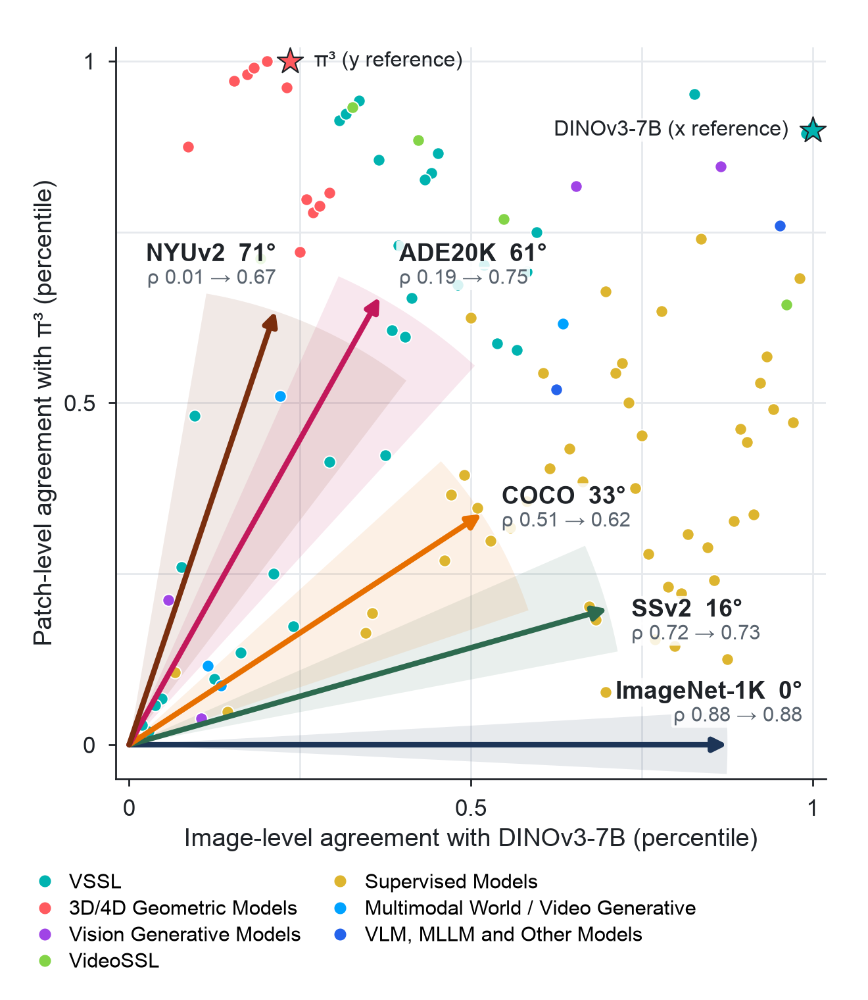

Visual representation learning
Revisiting Vision Model Baselines in the Deep Learning Era
Does an ImageNet winner lead on other tasks? We compare 113 configurations and adapt five selected models across the Basic Five.
Task ranks among 109 configurations · Figure 1
- Historical model configurations
- 113
- Training and evaluation experiments
- 2,500+
- Core tasks with LoRA adaptation
- 5
- Extended settings with frozen probes
- 40
Figure 1 · Transfer across tasks
109 configurations. Five task rankings.
One column per configuration, ordered by overall rank. Darker cells indicate better task ranks.
Figure 7 · Why the Basic Five?
Image recognition tells only part of the story.
The Basic Five cover image recognition (ImageNet), object detection (COCO), segmentation (ADE20K), depth estimation (NYUv2) and video recognition (SSv2). Their rankings reward different properties of a representation.


Open full-size figure ↗For NYUv2 depth, adding local patches to whole-image agreement raises held-out rank correlation from 0.01 to 0.67. On ImageNet-1K it stays at 0.88. Keeping both tasks exposes a difference a recognition-only leaderboard would miss.
| Task | Angle¹ | Image | Image + patch | Change |
|---|---|---|---|---|
| ImageNet-1K | 0° | 0.88 | 0.88 | |
| SSv2 | 16° | 0.72 | 0.73 | |
| COCO | 33° | 0.51 | 0.62 | |
| ADE20K | 61° | 0.19 | 0.75 | |
| NYUv2 | 71° | 0.01 | 0.67 |
¹ Fitted direction relative to ImageNet-1K. Agreement uses label-free nearest neighbors in ImageNet validation features, comparing pooled images with DINOv3-7B and local patches with π3. The two coordinates correlate weakly (ρ = 0.11). Task directions use measured downstream ranks. Predictions hold out each of seven model families in turn.
The paper reports 104 fitted configurations, with 94 used for COCO. Results depend on the reference models and the evaluation domain. These five tasks expose complementary variation in this study; they do not establish an optimal or exhaustive task set.